6*6[1] 36R is a open source statistical programming language. It can used through many Graphic User Interfaces (GUI) my preferences is to use RStudio but VSCode is good and you can also code in base R.
This tutorial will rely on using code written in RStudio and locations of things (Script, Console, Environment, Plots) will be RStudio specific but the code could be run in any GUI.
Scripts are saved code that you are editing (What I am writing in currently), you then execute (run) the code in the ‘console’ (Normally below the script window)
You can execute one line of code by having your cursor on that line in the script or select many lines then click the run buttom or cmd+enter (mac) or ctrl+enter (pc)
Everything to the right of a hastag ‘#’ is not executed, therefore we can use this to make comments or write in scripts
R code can be used to do simple calculations with values or even create lists, vectors, values, dataframes and more complex objects in the “global environment”. (normally top right)
6*6[1] 36We can use either <- or = to assign a value, list or dataframe into an object
An object is something (usually some sort of data) that is saved in temporary memory
a<- 17In R we can use functions to tasks for us, they precede a parenthesis (), some are named after what they do and some are less well named,
within functions they have arguments, what you put into these arguments will define how they perform.
We use c() to concatenate elements together, which means combine them into a vector, which is a series of values
b<- c(1,5,5,3,7)We can then perform different functions between objects
a*b[1] 17 85 85 51 119We can even save the results to a new object
c<-a*bThen we can look at what is in the object by running the object
c[1] 17 85 85 51 119We can also create data systematically with R
For example a sequence of 10 values going up by 1
Sequence<-seq(from=1,to=10,by=1)We will come back to generating data systematically later.
In R there are many different types of data, the most common four are Numeric, Interger, Character and Factor. Logical and Complex are also data types but very rarely used explicitly.
Numeric data is any real numbers so 8 or 12.3 or 1.00000002 etc, while Integer data is just whole numbers 3, 4, 111 etc
Character data are words or letters surrounded by quotations such as “A”, “Red”, “Treated”, Character data has no order to it in Rs ‘mind’
Factor data is like character data but r (or you) have assigned an order to it e.g. “A”, “B”, “C”
As we saw above we can store data in R as an Object, these can be many different types and combinations,
The most common Object types are Vectors, Lists, Matrices, DataFrames and Arrays,
The main differences of these Object types are what types and combinations of data can be stored in them and how many Dimensions they have,
A single group of one data type (it could be Numeric, Character, Integer, Factor), with one dimension is called a Vector.
Vector_Numeric<- c(1.3,5.8,5.122,3.00,7.12)
Vector_Integer<- as.integer(c(1,5,5,3,7)) # we change between data types with these functions
Vector_Character<- c("This","is","A","Character Vector")
Vector_Factor<-as.factor(c("This","is","A","Character", "Vector")) # Notice how r automatically orders alphabetically if we don't tell it the orderMultiple groups of one data type (it could be Numeric, Character, Integer, Factor), with two dimensions is called a Matrix.
Matrix_Numeric<- as.matrix(c(1.3,5.8,5.122,3.00,7.12))
Matrix_Character<- as.matrix(c("This","is","A","Character Matrix"))Multiple groups of a combination of data types or object types (it could be Numeric, Character, Integer, Factor or vectors, dataframes or matrices of these), with two dimensions is called a List. Each element in a list can be a different length to the other elements.
List_Numeric<-list(c(1.3,5.8,5.122,3.00,7.12),
c(1,5,5,3,7))
List_From_Vectors<-list(Vector_Character,Matrix_Numeric,Matrix_Numeric)Multiple groups of a combination of data types (it could be Numeric, Character, Integer, Factor), with two dimensions is called a Dataframe. Each element of a dataframe must be the last length as the other elements.
df<-data.frame(Column1=c(1.3,5.8,5.122,3.00,7.12),
Column2=c(1,5,5,3,7),
Column3=Vector_Factor)Multiple groups of one data type (it could be Numeric, Character, Integer, Factor or vectors or matrices), with more than two dimensions is called an Array.
Array_1d<-array(c(Matrix_Numeric,c(1.3,5.8,5.122,3.00,7.12)),dim=c(5))
Array_2d<-array(c(Matrix_Numeric,c(1.3,5.8,5.122,3.00,7.12)),dim=c(5,2))
Array_3d<-array(c(Matrix_Numeric,c(1.3,5.8,5.122,3.00,7.12)),dim=c(5,2,2))Arrays are rarely used so probably won’t discuss much further.

R relies upon packages, groups of specific functions, which can be installed from the internet and then loaded into a script.
Base R, a package always already installed and loaded within R, is very powerful and useful but less user friendly for some tasks.
From Base R we can use the install.packages() function to install a package from online repositories.
R assumes CRAN (the official online repository but sometimes you might want to download from other repositories)
#install.packages("dplyr") You only have to do this when you first want the package or want to update it.
Once a package is installed we have to tell R that we want to use functions from this package so we load it
library(dplyr)
Attaching package: 'dplyr'The following objects are masked from 'package:stats':
filter, lagThe following objects are masked from 'package:base':
intersect, setdiff, setequal, unionThis needs to be run every new R session when this package is used.
We can now run functions from the dplyr library, specifically dplyr is a package, which is part of a group or ecosystem of packages called the tidyverse
We will use this group of packages for reading data into R (readr), manipulating data (dplyr) and visualisng data (ggplot2)
First we can make some data into a dataframe, explore this data, transform and add to it, then we will make some figures with it.
R has some very useful random and non-random data generation functions
#install.packages("tidyverse")
library(tidyverse)── Attaching core tidyverse packages ──────────────────────── tidyverse 2.0.0 ──
✔ forcats 1.0.0 ✔ readr 2.1.4
✔ ggplot2 3.4.2 ✔ stringr 1.5.0
✔ lubridate 1.9.2 ✔ tibble 3.2.1
✔ purrr 1.0.1 ✔ tidyr 1.3.0
── Conflicts ────────────────────────────────────────── tidyverse_conflicts() ──
✖ dplyr::filter() masks stats::filter()
✖ dplyr::lag() masks stats::lag()
ℹ Use the conflicted package (<http://conflicted.r-lib.org/>) to force all conflicts to become errorsYear <- seq(from=1950,to=2023,by=1)
Treatment <- c("Control","Treatment 1","Treatment 2")
Rep<- seq(from=1,to=10,by=1)These are three vectors, which we can check information about them with a few simple functions
length(Year)[1] 74summary(Year) Min. 1st Qu. Median Mean 3rd Qu. Max.
1950 1968 1986 1986 2005 2023 length(Treatment)[1] 3summary(Treatment) Length Class Mode
3 character character length(Rep)[1] 10summary(Rep) Min. 1st Qu. Median Mean 3rd Qu. Max.
1.00 3.25 5.50 5.50 7.75 10.00 We want to combine these vectors so we have a row for each rep, year and treatment, we can do this by expanding the grid and create a new dataframe called df.
We can inspect specific elements of a dataframe too
df<-expand.grid(Year=Year,Treatment=Treatment,Rep=Rep)
class(df) # type of object[1] "data.frame"nrow(df) # number of rows[1] 2220ncol(df) # number of columns[1] 3dim(df) # dimensions of object[1] 2220 3head(df) # the first 6 rows of the df Year Treatment Rep
1 1950 Control 1
2 1951 Control 1
3 1952 Control 1
4 1953 Control 1
5 1954 Control 1
6 1955 Control 1tail(df) # the last 6 rows of the df Year Treatment Rep
2215 2018 Treatment 2 10
2216 2019 Treatment 2 10
2217 2020 Treatment 2 10
2218 2021 Treatment 2 10
2219 2022 Treatment 2 10
2220 2023 Treatment 2 10This df is all the meta data we want for our dataframe that we want to now make up some response data
Response<-rnorm(n=nrow(df),mean = 15,sd=8) # we need the response to be same length as the df so we use nrow() for the number of values we want.We can then combine this to our df, the dollar sign is used to select one dimension (column) from within an object (here a dataframe)
df$Response isn’t present in the data but by assigning our Response vector to it with <- it adds a new column
df$Response<-ResponseWe can check the data we have using a base plot function
The base plot() function will create a grid that is each column of the data set plotted against all the others, this is fine for continuous data (Such as bill_depth_mm)
but it is hard to understand or read fully.
plot(df)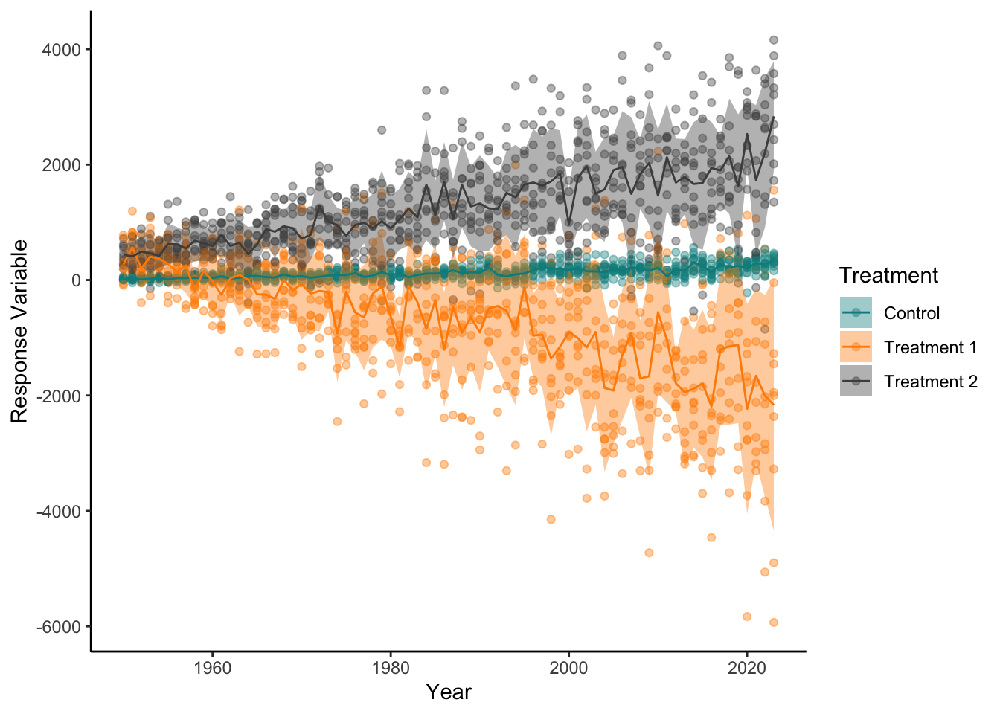
We can define x and y axes from columns of the data set
plot(x=df$Year,y=df$Response)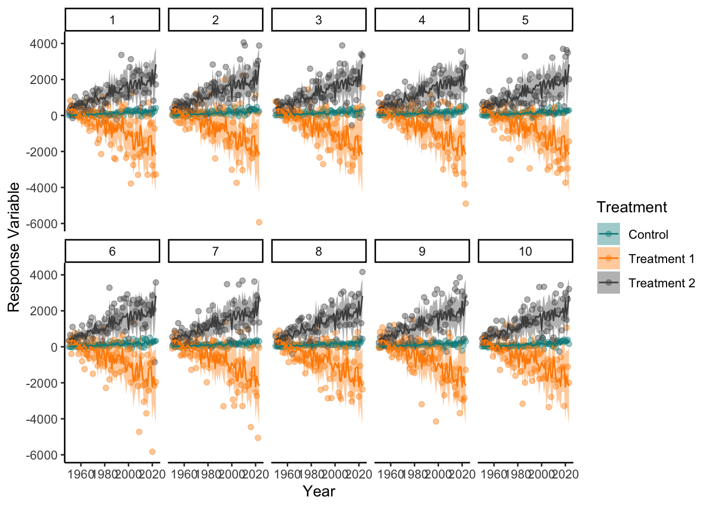
It automatically does a scatter plot, maybe we want to colour different treatments differently? and perhaps some axis labels that are more clear?
plot(x=df$Year,y=df$Response,col=df$Treatment, xlab="Year",ylab="Response")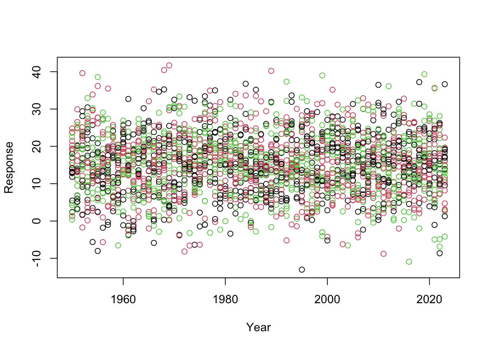
Some of the arguments in this function are well named but you need to know the names of the arguments to properly use a function best,
you can easily find documentation of what arguments are within a function by typing two ? before the function in the console like so:
??plot()
# plot is a common function name so we have to go to the base::plot() section of the helpWith the points coloured we should add a legend to the plot, this is accomplished with another function run after the plot function
plot(x=df$Year,y=df$Response,col=unique(df$Treatment), xlab="Year",ylab="Response",pch=19)
legend(x = "topright", # Position
legend = unique(df$Treatment), # Legend texts
col = c(1,2, 3), # point colors
pch=19) # point type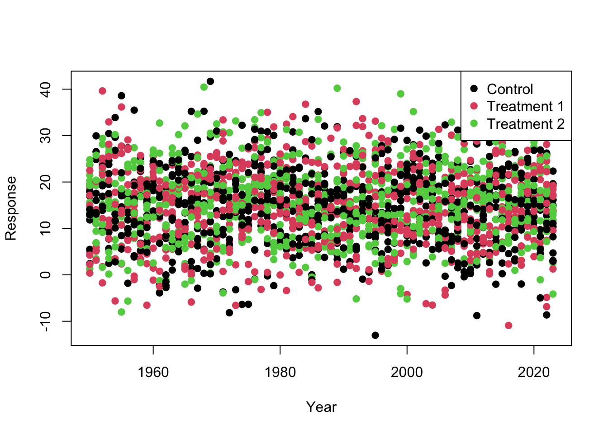
Here we can see that the response is totally random, regardless of treatment and year
For interesting plotting we can change this
For manipulation we can use something called pipes %>% which push the output from one line into the function on the next line
we can change the values of response by the values of year and treatment using the case_when function to create clauses similar to if else statements
The mutate function can be used to create new columns based on current columns or other values/objects
These two lines do the same, but one uses a pipe (%>%) and one doesn’t. For a simple example there is little to no difference,
but when using multiple functions in a row piping makes code a lot easier to read and understand what order functions have been carried out in.
df_1<-df %>%
mutate(Response_updated=case_when(Treatment=="Control"~jitter(Response)*((Year-1930)/5)-50,
Treatment=="Treatment 1"~jitter(Response)*((Year-1930)*-2)+1000,
Treatment=="Treatment 2"~jitter(Response)*((Year-1930)*1.5)-4))
df_1<-mutate(df,
Response_updated=case_when(Treatment=="Control"~jitter(Response)*((Year-1930)/5)-50,
Treatment=="Treatment 1"~jitter(Response)*((Year-1930)*-2)+1000,
Treatment=="Treatment 2"~jitter(Response)*((Year-1930)*1.5)-4))We can now calculate some summary statistics such as mean or standard deviation using group_by and summarise
The group_by function means that all unique values in the Treatment column are used
df_1_summary<-df_1 %>%
group_by(Treatment) %>%
summarise(MeanResponse=mean(Response_updated),
SDResponse=sd(Response_updated))
df_1_summary# A tibble: 3 × 3
Treatment MeanResponse SDResponse
<fct> <dbl> <dbl>
1 Control 125. 119.
2 Treatment 1 -713. 1143.
3 Treatment 2 1266. 898.df_1_summary_year<-df_1 %>%
group_by(Treatment,Year) %>%
summarise(MeanResponse=mean(Response_updated),
SDResponse=sd(Response_updated))`summarise()` has grouped output by 'Treatment'. You can override using the
`.groups` argument.df_1_summary_year# A tibble: 222 × 4
# Groups: Treatment [3]
Treatment Year MeanResponse SDResponse
<fct> <dbl> <dbl> <dbl>
1 Control 1950 0.927 21.2
2 Control 1951 -4.80 26.7
3 Control 1952 26.3 37.8
4 Control 1953 24.8 43.2
5 Control 1954 10.6 42.9
6 Control 1955 4.04 43.3
7 Control 1956 15.8 38.4
8 Control 1957 13.0 39.8
9 Control 1958 31.4 37.2
10 Control 1959 21.6 29.8
# ℹ 212 more rowsNow lets try and plot these data, for more complex plots ggplot2 is by far the best package
we first make a blank ggplot saying what data we will include
then we want to add layers to the plot for what we want to plot and how we want it to look
for elements of the plot that change with data from the df we use the aes() function to show what column we want to map to what element (mapping=aes())
ggplot(data=df_1)+
geom_point(mapping=aes(x=Year,y=Response_updated,colour=Treatment))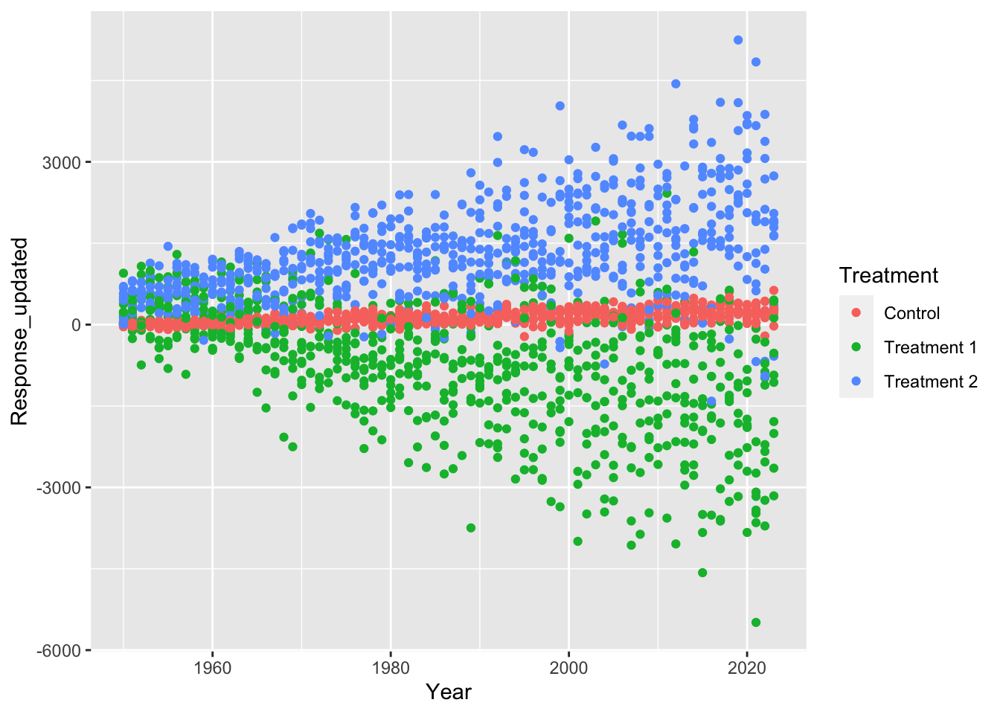
This looks good but could be Nicer there are many geom types to dictate the type of plot
different geom types have different required aesthetic elements, we could check by using ??geom_point for example
generally we use, x, y, colour, fill and alpha (transparency)
unlike base plotting ggplot creates a legend automatically, this becomes more complex as the plot becomes more complex but is generally a nice default
ggplot(df_1)+
geom_density(aes(x=Response_updated,colour=Treatment))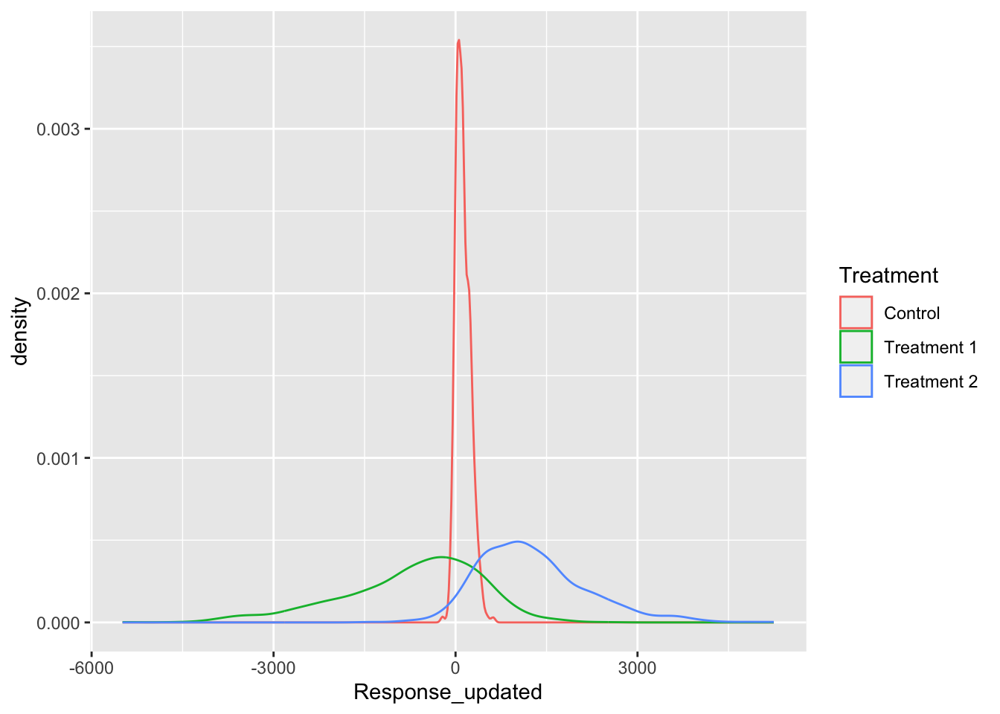
ggplot(df_1)+
geom_col(aes(x=Year,y=Response_updated,fill=Treatment),alpha=0.5)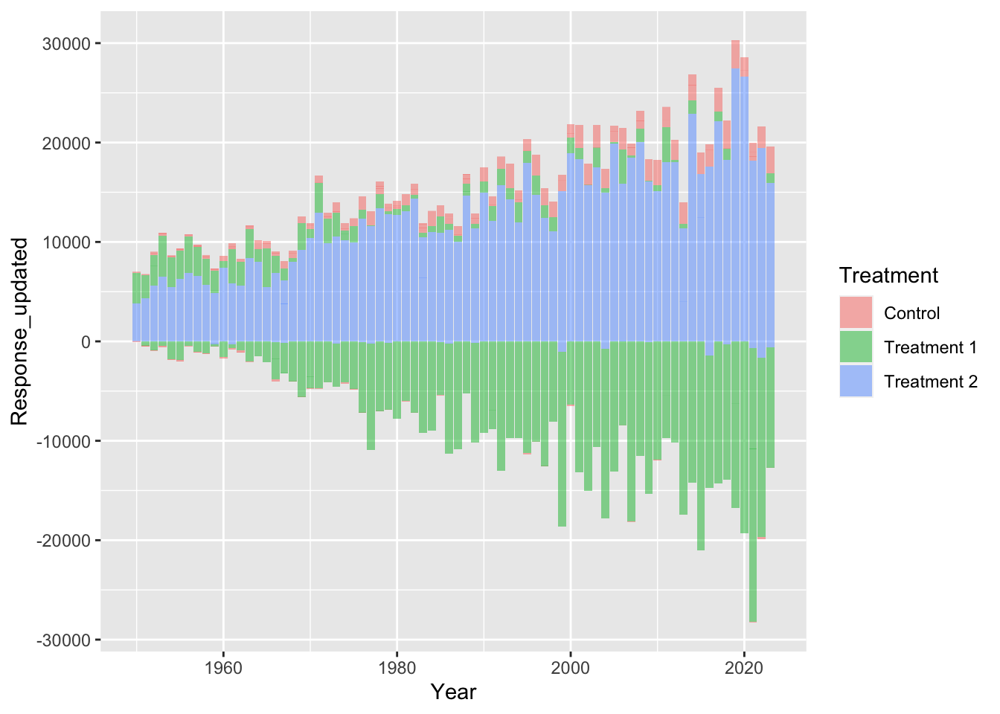
ggplot(df_1)+
geom_boxplot(aes(x=Treatment,y=Response_updated,fill=Treatment),alpha=0.5)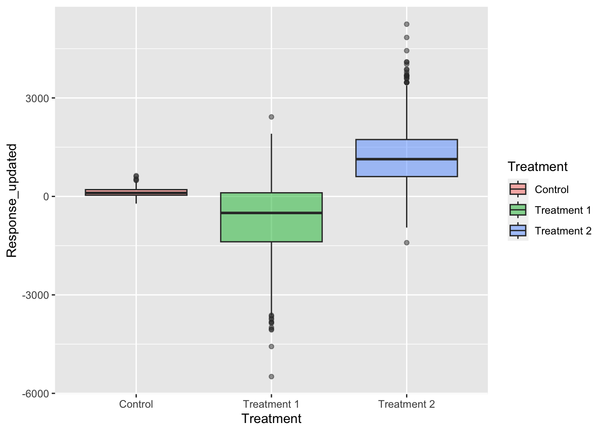
We can also add new data into the same plot so we could use the summary data too, for this we add the data to the geom we want it used for
ggplot()+
geom_point(data=df_1,mapping=aes(x=Year,y=Response_updated,colour=Treatment),
alpha=0.4)+
geom_ribbon(data=df_1_summary_year,mapping=aes(x=Year,ymax=MeanResponse+SDResponse,
ymin=MeanResponse-SDResponse,fill=Treatment),
alpha=0.4)+
geom_line(data=df_1_summary_year,mapping=aes(x=Year,y=MeanResponse,colour=Treatment))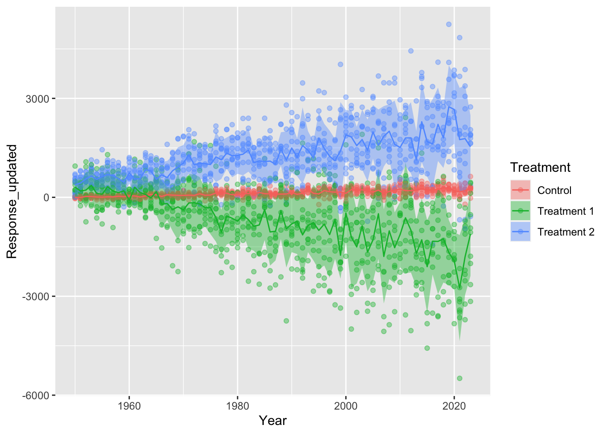
We can now change the style and appearance, theme() is used to change appearances
there are also some preset theme functions like theme_classic() or theme_bw()
we can also define the colours or fill we want using the scale_colour_manual() and scale_fill_manual() functions
ggplot()+
geom_point(data=df_1,mapping=aes(x=Year,y=Response_updated,colour=Treatment),
alpha=0.4)+
geom_ribbon(data=df_1_summary_year,mapping=aes(x=Year,ymax=MeanResponse+SDResponse,
ymin=MeanResponse-SDResponse,fill=Treatment),
alpha=0.4)+
geom_line(data=df_1_summary_year,mapping=aes(x=Year,y=MeanResponse,colour=Treatment))+
scale_colour_manual(values=c("darkcyan","darkorange","grey30"))+
scale_fill_manual(values=c("darkcyan","darkorange","grey30"))+
labs(x="Year",y="Response Variable")+
theme_classic()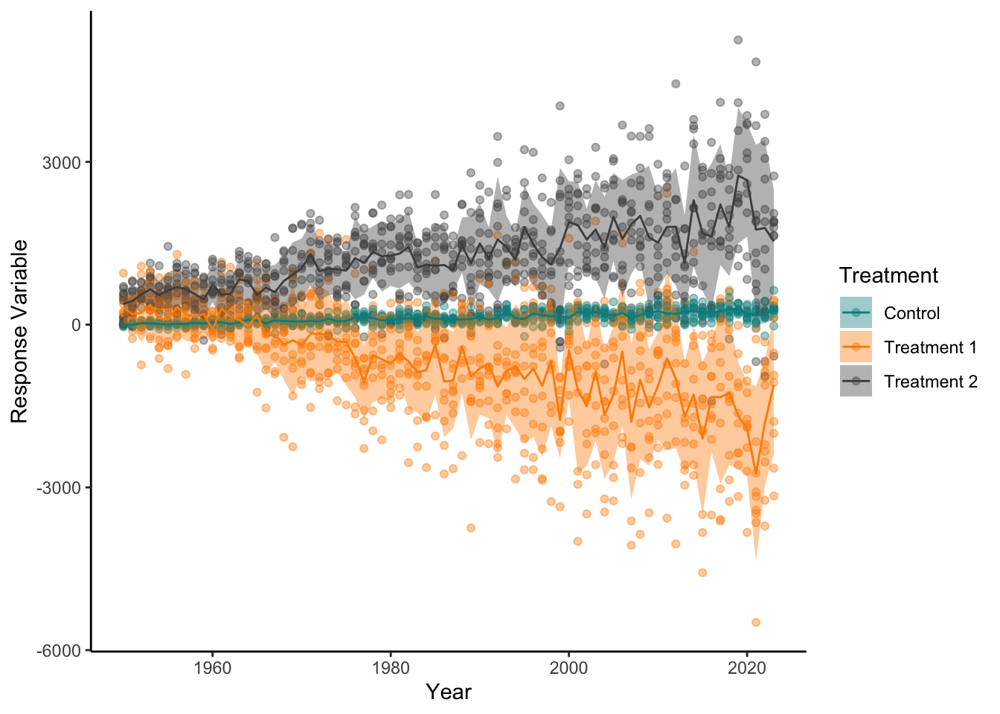
We could even separate plots by another column (facetting)
ggplot()+
geom_point(data=df_1,mapping=aes(x=Year,y=Response_updated,colour=Treatment),
alpha=0.4)+
geom_ribbon(data=df_1_summary_year,mapping=aes(x=Year,ymax=MeanResponse+SDResponse,
ymin=MeanResponse-SDResponse,fill=Treatment),
alpha=0.4)+
geom_line(data=df_1_summary_year,mapping=aes(x=Year,y=MeanResponse,colour=Treatment))+
facet_wrap(~Rep, nrow=2)+
scale_color_manual(values=c("darkcyan","darkorange","grey30"))+
scale_fill_manual(values=c("darkcyan","darkorange","grey30"))+
labs(x="Year",y="Response Variable")+
theme_classic()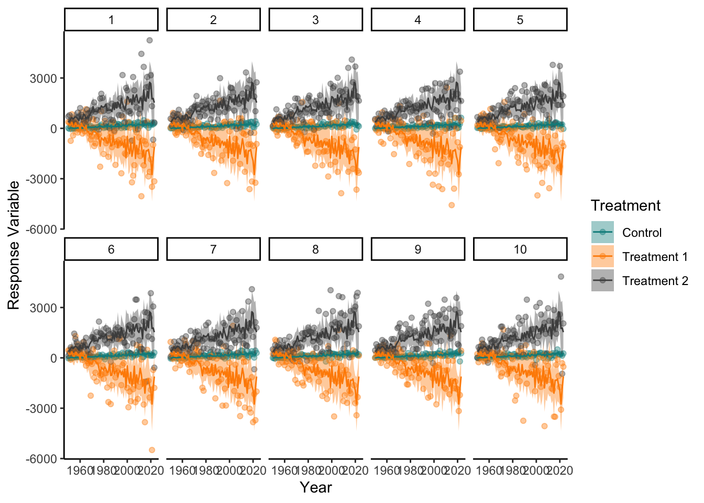
Once we have got a plot to how we want it we can then save it as a file on our computer using the ggsave() function
to do this we can save our plot as an object, then provide the location we want to save the file and its name and extension in quotations, and its size,
we will save to the current directory.
Plot_To_Save<-ggplot()+
geom_point(data=df_1,mapping=aes(x=Year,y=Response_updated,colour=Treatment),
alpha=0.4)+
geom_ribbon(data=df_1_summary_year,mapping=aes(x=Year,ymax=MeanResponse+SDResponse,
ymin=MeanResponse-SDResponse,fill=Treatment),
alpha=0.4)+
geom_line(data=df_1_summary_year,mapping=aes(x=Year,y=MeanResponse,colour=Treatment))+
facet_wrap(~Rep, nrow=2)+
scale_color_manual(values=c("darkcyan","darkorange","grey30"))+
scale_fill_manual(values=c("darkcyan","darkorange","grey30"))+
labs(x="Year",y="Response Variable")+
theme_classic()
ggsave("This_Is_Our_First_Saved_Plot.png", Plot_To_Save, width=10, height=10) # dont forget to put the file type at the end we will use .png